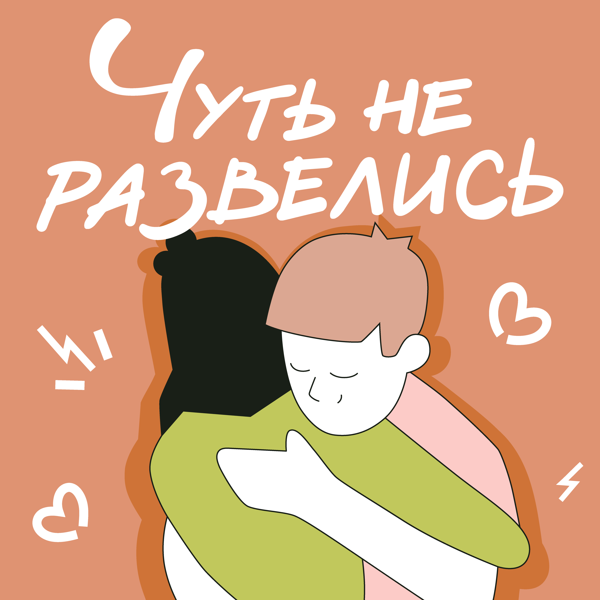
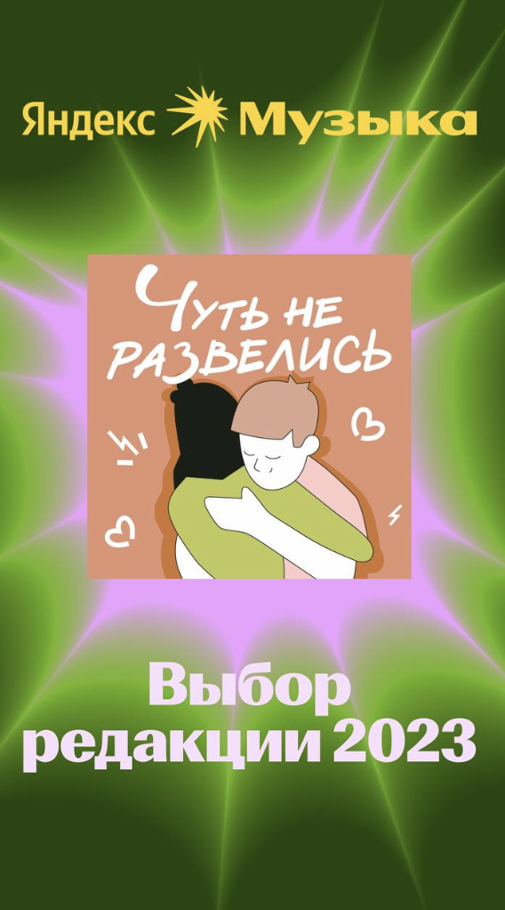
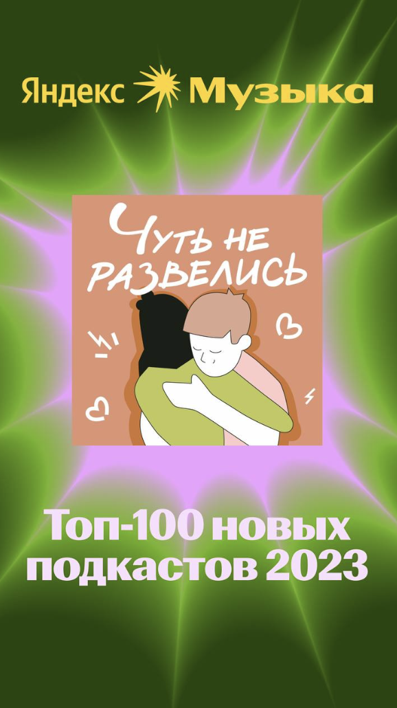
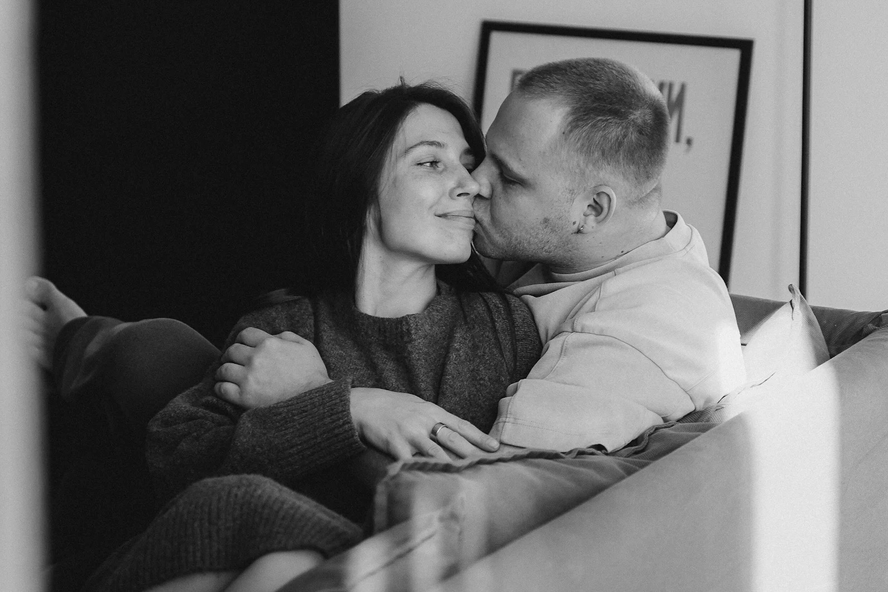
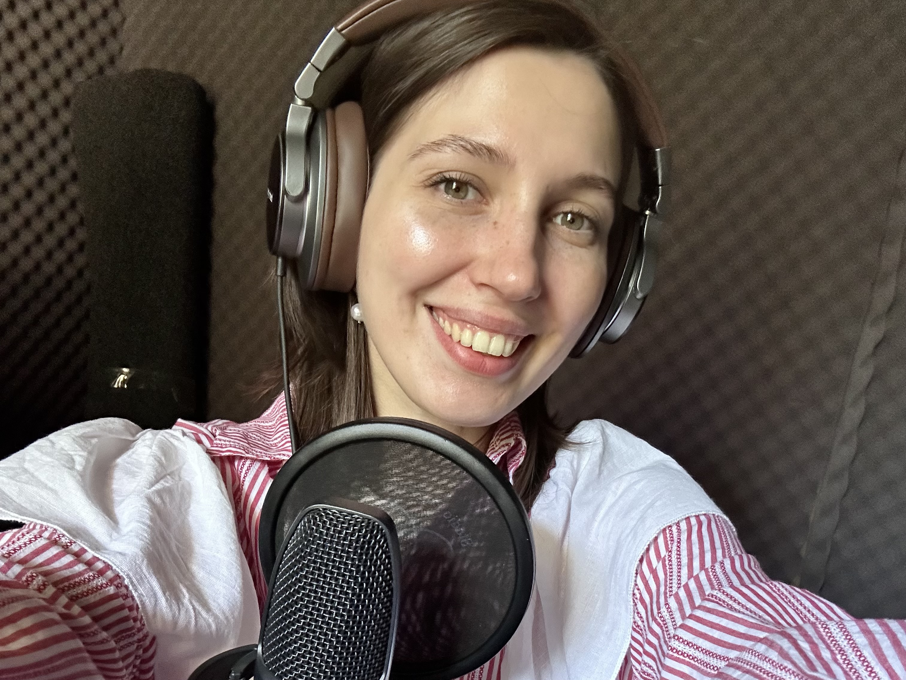
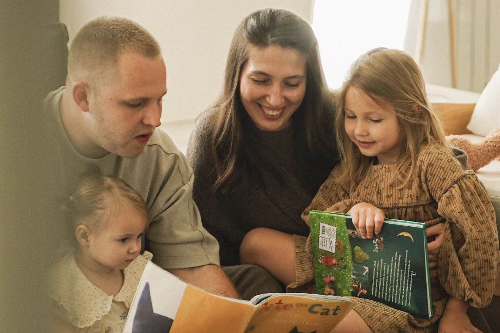
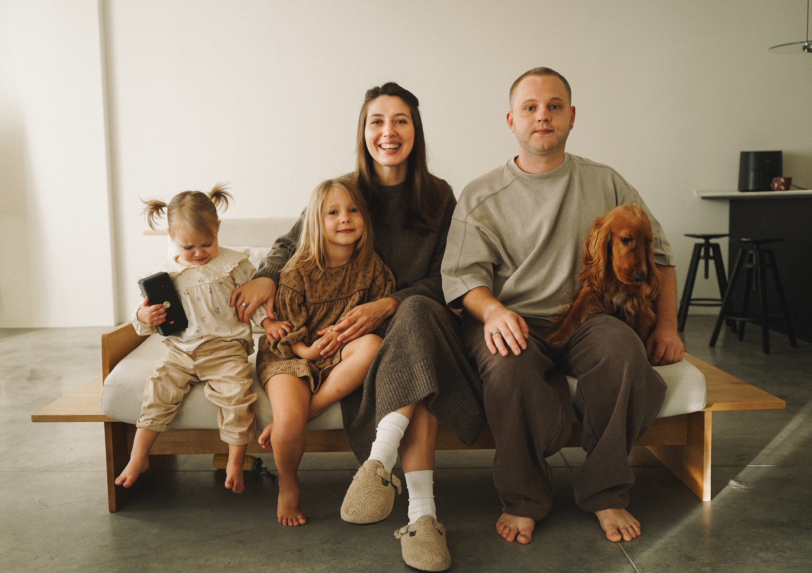

Чуть не
развелись
Подкаст про долгосрочные отношения, кризисы в них и родительство
1 млн+ прослушиванийВыбор редакции Яндекс Музыки 2023Топ‑100 новых подкастов 2023
Про отношения
такие, какие они есть
В 2022 году мы пережили большой кризис в отношениях и чуть не развелись. Но не разводиться — это наш осознанный выбор.
В подкасте мы говорим о кризисах отношений и родительства: как поняли, что оказались в них, куда обращались и какие инструменты пробовали. Никаких советов и волшебных таблеток — только наш житейский опыт в формате диалога.


Где
слушать
О подкасте
в СМИ
podcasts.ru
От подкаста к книге. Опыт ведущих подкаста «Чуть не развелись»

ЛайфхакерЛучшие подкасты 2023

Forbes10 лучших новых подкастов
Psychologies
Подкасты о здоровье, отношениях и работе

Яндекс КнигиЧто почитать с детьми

Подкаст «Тело привычки»Я, ты и ребенок — как меняются отношения после появления ребенка
Отзывы
наших слушателей
Для сотрудничества
пишите нам на почту
С НАМИ СОТРУДНИЧАЛИ
Авито Авто
flowwow
Периодика
Синхронизация
GoodPoint
Золотое
Яблоко
Яблоко